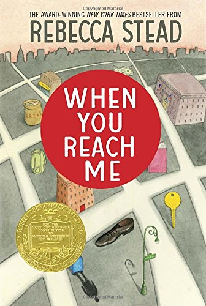

Things to Check Out!
Books
One of my favorite YA novels! Follow protagonist Tella Holloway as she navigates the harshest terrains with the help of a strange fox in an attempt to save her brother.

A fun, easy read that will make you with all libraries could be this cool! Follow Kyle Keely and his friends as they crack ciphers, solve puzzles, and search for an exit from this library lock-in.

Honestly, my all-time favorite book. Highly recommend if you love betrayal, revenge, Napoleon-era France, and multiple intertwining plots. The love story is one of the saddest ones out there, where you just can't help but feel bad for those characters involved.
One of the more confusing books in my repertoire. A twisting tale of time travel, characters with more depth than first appearance would suggest, and an ending that you won't see coming. Highly worth the time needed to understand.
Movies

A classic that will never fail to make you laugh. Two FBI agents go undercover at the Hamptons- and their blonde wigs are fantastic.

Definitely one of the scarier movies of my childhood. The animation is spectacular, the plot twists in unexpected ways, and there are Easter eggs hidden throughout the movie. Did you ever have a doll with button eyes? You might want to think twice about it after watching this movie.

One of the most beautiful movies I have seen. I cried so many times, but even the saddest parts couldn't take away from the masterful soundtrack and delicate yet intriguing plot. If you like deep space exploration, time distortion, family, and wormholes, you'd better reserve 3 hours to enjoy your trip orbiting a black hole.

Again, another tear jerker. Based off a true story, this movie is simultaneously inspiring and heartbreaking. I think it's definitely worth a watch.
TV Shows

Hilarity, action, mystery, and some very impressive detective work- you can't help but root for Shawn Spencer, Chief "Psychic" of the Santa Barbara Police Department. This show has compelling characters, believable plot, and the odd bit of romance here and there.

One of the most grown-up kids' TV shows out there, in my opinion. What seems like a fun show about two twins living with their eccentric uncle in the middle of Nowhere, Oregon for the summer quickly turns into a deep mystery full of weird creatures and interdimensional threats. Features a plot twist and magnificent Easter eggs - I cannot recommend this show enough, even for older crowds.

This is a show I only recently discovered, but very quickly got sucked into. The episode continuity is amazing and I couldn't think of a better group of characters to have ended up friends. Episodes go by quickly and are always good for a laugh.

Talk about Easter eggs and mystery! If you need a description of Tiabeanie (Bean), just picture a Disney princess with a drinking problem. There's never a dull moment on the adventures she and her friends, an elf and a demon, go on together.